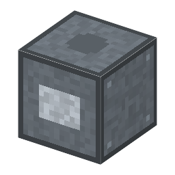

説明
①子ども 焼き上がったチップに針を当てて、電気が流れるか調べる台。
②学生 ふちのパッドをクリックして 0 V・5 V・つながない を決めると、電流の流れが黄色く光る。「調べる」で中の回路を判定する。汚れたチップは電流がもれて、動いたり動かなかったりする（洗うと直る）。
③大人 本物の工場では、ウェハーの上のチップ1つずつに細い針を当てて、良いか悪いかを調べる。悪いチップには印を付けて、あとで捨てる。
④ガチ 全部のチップが動くわけではない。良いチップの割合（歩留まり）は、ごみや欠陥の多さとチップの広さで決まる（Y ≈ e^(−D·A)）。
作り方
使い道
（このアイテムを使うレシピは無い）